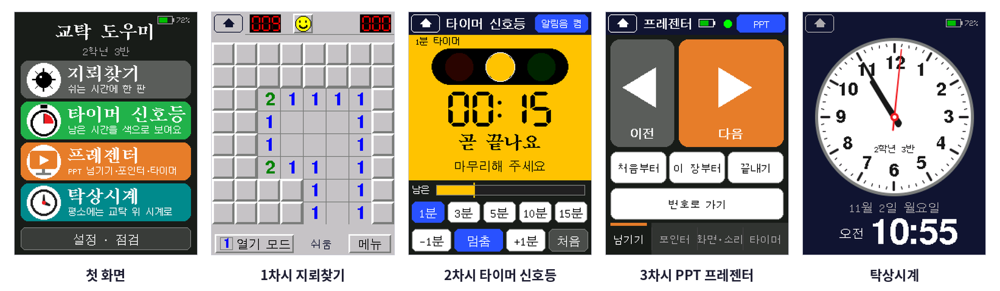

클로드와 함께 준비한 교사 연수「바이브코딩으로 만드는 교탁 도우미」 3차시 × 50분
강사해연중학교 김시명
작성2026. 11. 25.
작성2026. 11. 25.
바이브코딩(코드를 직접 쓰지 않고 말로 설명해 만드는 방식)을 가르치는 연수를, 준비 과정 자체도 바이브코딩으로 해낸 사례입니다.
교사는 기획·판단·실물 확인을, 클로드는 코드 작성·사이트 생성·자동 검사를 맡았습니다.
단, 지금 쓰는 대체 보드는 아직 실제 기기에서 테스트하기 전입니다(9번).
1한눈에 보기
| 항목 | 내용 |
|---|---|
| 연수 | 바이브코딩으로 만드는 교탁 도우미 — 교사 대상, 3차시 × 50분 |
| 만드는 기기 | 2.8인치 터치 보드 하나에 지뢰찾기(1차시) · 타이머 신호등(2차시) · PPT 프레젠터(3차시) · 탁상시계 |
| 보드 | 처음 계획 LCDwiki ES3C28P (ESP32-S3) → 바뀐 보드 LCDwiki E32R28T-1 (ESP32), 2인 1조 |
| 강의 사이트 | biscuitbox.github.io/classhelper-e32 (단축 주소 숏.한국/교탁) |
| 사이트 구성 | 홈, 슬라이드 3개(모두 53장), 실습 워크벤치, 초보 가이드북, 강사용 진행 대본·강사 준비 — 8페이지 |
| 보드 코드 | 시작 코드 · 완성 코드 두 묶음, 파일 13개 |
- 결과물: 강의 사이트 2개(기존 보드용·대체 보드용)와 보드용 코드 키트
- 실제 보드에서 무엇이 일어나는지는 교사만 볼 수 있었고, 그 관찰이 문제 해결의 출발점이었습니다.
2누가 무엇을 했나
| 일 | 교사 김시명 | 클로드 |
|---|---|---|
| 기획 | 대상·차시·도구·만들 기능 결정 | 차시 흐름과 페이지 구성 제안 |
| 보드 코드 | 실제 보드에 올려 눌러 보고 증상 알려 주기 | 코드 작성, 원인 추정, 고치기, 컴파일 확인 |
| 강의 자료 | 내용·용어·문구 검토 (예: “앱 약속” → “앱 규칙”) | 슬라이드·워크벤치·가이드북·대본 생성 |
| 사진·자료 | 프로그램 화면 캡처, 보드 사진, 드라이버 파일 제공 | 강조 표시, 보드 화면 시뮬레이션 캡처 |
| 배포 | 저장소 만들기, 단축 주소 | 저장소에 올리기, 링크·그림 점검 |
| 최종 판단 | 무엇을 넣고 뺄지, 어느 쪽으로 갈지 | 선택지와 추천 제시 |
3준비 흐름 — 8단계
- 가장 오래 걸린 것은 ③ 실물 시험과 고치기의 반복입니다.
- 수강생이 만들 결과물(②)을 먼저 완성하고, 그 뒤에 강의 자료(⑤)를 만들었습니다.
4장면 1 — 블루투스 문제를 함께 푼 과정
3차시 PPT 프레젠터(보드가 노트북의 블루투스 키보드·마우스가 되는 앱)는 네 번의 ‘관찰 → 원인 추정 → 수정 → 재시험’ 끝에 완성됐습니다. 클로드는 실제 보드를 볼 수 없어서, 교사가 전해 준 화면 상태와 시리얼 로그가 유일한 단서였습니다.
| 회차 | 교사 본 것 | 클로드 찾은 원인 | 고친 것 → 결과 |
|---|---|---|---|
| 1 | PC는 ‘연결됨’인데 기기는 ‘기다리는 중’ | 라이브러리가 연결 소식을 못 받음 | 연결을 직접 확인하게 바꿈 → 표시 정상 |
| 2 | 포인터·소리 버튼을 누르면 재부팅 (로그 전달) | 작업 메모리 부족과 출력 충돌 | 메모리를 늘리고 출력 정리 → 재부팅 없음 |
| 3 | 두 번 눌러야 넘어가고 마우스가 안 움직임 | 같은 종류의 통로를 라이브러리가 하나만 등록 | 장치 정보를 직접 등록 → 마우스·키 정상 |
| 4 | 웹 슬라이드는 한 번에 넘어감 | 두 번 누름은 PPT 쪽 동작으로 판단 | “이 정도면 완성” — 교사가 마무리 결정 |
한 줄이 끝날 때마다 교사가 보드에 다시 올려 시험하고, 그 결과가 다음 줄의 출발점이 됐습니다.
결정적 장면3회차 — “두 번 눌러야 한다”와 “마우스가 안 움직인다”는 두 증상을 함께 보고, 클로드가 블루투스 라이브러리 내부를 읽어 원인을 찾았습니다.
교사 판단4회차 — 남은 ‘두 번 누름’은 교사가 웹 슬라이드와 비교해 PPT 쪽 동작임을 확인하고 마무리를 결정했습니다.
5장면 2 — 기기가 바뀌었을 때
연수 직전에 쓰려던 보드가 모자라다가 아예 도착하지 않았고, 그 소식을 들은 날 밤 안에 다른 보드용 강의로 바꿨습니다. 교사가 대체 보드의 라벨 사진을 보내면서 시작됐습니다.
1
차이 파악클로드가 제조사 문서를 찾아 두 보드를 비교했습니다. 칩(ESP32-S3 → ESP32), 터치 방식(정전식 → 저항식), 소리 장치가 다르고 마이크가 없다는 점이 나왔습니다.
2
교사의 결정마이크가 필요한 2차시 ‘소음 신호등’은 마이크 모듈 구입 · 짝 활동 · 대체 앱 중에서 대체 앱을 골랐습니다. 그래서 남은 시간을 신호등 색으로 보여 주는 ‘타이머 신호등’이 생겼습니다.
3
코드 옮기기클로드가 화면 · 저항식 터치 보정 · 소리 · 절전 · LED를 새 보드에 맞게 바꾸고, 컴파일과 시뮬레이터로 확인했습니다.
4
2인 1조 사이트보드 하나를 두 명이 쓰는 수업으로 다시 짰습니다. 키보드를 잡는 ‘운전석’과 워크벤치를 읽어 주고 보드를 눌러 보는 ‘조수석’을 두고, 실습 중간마다 자리를 바꾸게 했습니다.
5
마무리교사가 보드 사진 · IDE 화면 · 장치 관리자 화면을 찍어 주고, 클로드가 강조 표시를 해서 올렸습니다. USB 드라이버는 제조사 문서에서 CH340C 칩임을 확인하고, 교사가 받은 공식 파일의 디지털 서명을 검사한 뒤 사이트에 올렸습니다.
‘무엇을 포기하고 무엇을 지킬지’는 교사가 정하고, 바뀐 부분의 대부분은 클로드가 처리하는 방식으로 빠르게 대응했습니다.
6AI가 만든 것을 어떻게 확인했나
AI의 “됐습니다”를 그대로 믿지 않고, 만든 것마다 확인할 방법을 정해 두었습니다. 끝까지 사람이 확인해야 하는 것은 ‘실제 보드에서 동작하는가’입니다.
| 확인한 것 | 방법 | 누가 |
|---|---|---|
| 코드가 올라가는가 | 실제 아두이노 컴파일러로 컴파일, 저장 공간 사용량 확인 | 클로드 |
| 보드 화면이 맞게 나오는가 | PC에서 보드 화면을 흉내 내는 시뮬레이터로 눌러 보고 캡처 | 클로드 |
| 터치 보정 계산이 맞는가 | 가짜 손가락으로 네 귀퉁이를 누른 뒤 가운데가 가운데로 읽히는지 | 클로드 |
| 슬라이드가 넘치지 않는가 | 창 크기 5가지에서 자동 검사 + 전체 캡처 눈으로 확인 | 클로드 |
| 그림·링크가 빠지지 않았나 | 모든 페이지의 그림 파일과 링크 자동 점검 | 클로드 |
| 드라이버가 정품인가 | 제조사(WCH) 디지털 서명과 변조 여부 검사 | 클로드 |
| 글자가 이상하지 않은가 | 실제 화면을 보고 줄바꿈·겹침 제보 | 교사 |
| 실제 보드에서 동작하는가 | 업로드 후 눌러 보고 PPT에 연결 | 교사 |
예시교사가 슬라이드에서 제목과 글자가 겹친 것을 캡처해 알림 → 원인: 7줄 일정표가 화면 높이를 넘음 → 클로드가 고치고 창 크기별 자동 검사를 새로 추가
7만든 것
수강 교사가 3차시 뒤 교탁에 두고 쓸 기기 하나와, 그것을 만드는 데 필요한 강의 자료 일식입니다.

| 산출물 | 내용 |
|---|---|
| 강의 슬라이드 | 3차시 53장, 방향키로 넘기는 웹 슬라이드, 화면 캡처 자리 포함 |
| 실습 워크벤치 | 차시별 프롬프트 ①②③ + 복사 버튼, 완성 코드, 보드 코드·드라이버 내려받기 |
| 초보 가이드북 | 설치·업로드·터치 보정·문제 해결(증상 → 이유 → 해결) |
| 강사용 | 분 단위 진행 대본, 준비물·실물 점검·사전 설치 안내문 |
| 보드 코드 | 시작 코드(빈칸 포함) · 완성 코드, 자동 절전·화면 회전·시간 유지 포함 |
| 제출용 PDF | 기존 보드용 슬라이드를 표지와 함께 53쪽으로 묶음 |
8활용 팁 — 다른 선생님들께이번 준비에서 효과가 컸던 방식
1
본 것을 그대로 말하기“안 돼요”보다 “PC에서는 연결됨, 기기에서는 기다리는 중”처럼 양쪽 상태를 적으면 원인이 빨리 좁혀집니다.
2
화면과 오류는 사진이나 복사로시리얼 로그, 빨간 오류 글자, 화면 캡처를 붙이면 추측이 아니라 근거로 고칩니다.
3
용어와 문구는 교사가 정하기“단추 그리기” → “버튼 그리기”처럼, 받는 사람에 대한 판단은 교사의 몫입니다.
4
완성본부터 만들기결과물을 먼저 완성하고 프롬프트·슬라이드를 나중에 만들면 목표가 고정돼 자료가 흔들리지 않습니다.
5
마지막 확인은 사람이컴파일과 시뮬레이터를 통과해도 실제 기기에서는 다를 수 있습니다. AI가 확인한 것과 못 한 것을 구분해 말하게 하고, 못 한 것은 직접 확인합니다.
9현재 상태 — 실제 기기 테스트 전
⚠ 기기가 바뀌어, 지금 강의에 쓰는 대체 보드(E32R28T-1)용 코드는 아직 실제 기기에서 테스트하기 전입니다.
컴파일과 PC 시뮬레이터까지만 확인했습니다.
| 구분 | 기존 보드 ES3C28P | 대체 보드 E32R28T-1 (현재 강의) |
|---|---|---|
| 컴파일 | 통과 | 통과 저장 공간 96% 사용 |
| PC 시뮬레이터 화면 | 확인 | 확인 터치 보정 계산 포함 |
| 실제 기기: 블루투스 PPT 넘기기·마우스·소리 조절 | 확인 완료 | 테스트 전 |
| 실제 기기: 저항식 터치·소리·화면 색·절전 | — | 테스트 전 |
연수 전에 대체 보드 한 대로 확인할 것 — 강사 준비 페이지 ‘실물 점검 9항목’
- ① 시작 코드가 올라간다
- ② 화면 색이 맞다
- ③ 터치 보정 뒤 점이 손끝에 찍힌다
- ④ 효과음이 난다
- ⑤ 노트북과 블루투스로 연결된다
- ⑥ 다른 노트북으로 옮겨진다
- ⑦ 타이머 신호등 완성 코드가 돈다
- ⑧ 절전에서 깨어난다
- ⑨ PPT·구글 슬라이드 단축키
가장 불확실한 것은 블루투스입니다. 이 칩은 블루투스 내부 방식이 달라서, 기존 보드에서 고친 길과 다른 길로 동작합니다.
해연중학교 김시명 · 2026 · 클로드(Claude)와 함께 준비한 교사 연수 「바이브코딩으로 만드는 교탁 도우미」